← 本轮 smoke 总览traex/DeepSeek-V4.1-Flash · 0017
vision-agent · 256×144 · 4.0 FPS · 20 帧 · 状态 complete · 输出 tokens 50036
原始任务Static locked-off single-shot with fixed frame throughout filmed with constant framerate in real-time. The scene shows a realistic scientific demonstration. The scene only contains the described setup and actions. The green kinetic sand is located on a wooden table, and the blue-black grabber tool is suspended over it. The blue-black grabber tool releases the blue tennis ball above a pile of green kinetic sand.
当前保存结果
已保存候选与代码修改
这里按时间展示外部捕获的候选，每份均可单独播放。保存新版本不等于完成视觉检查；下方工具证据记录实际看过的图。
候选 01 · 2026-11-08T20:47:26.542728+00:00 · 点开播放与检查图
inspection.png

transition_check.png
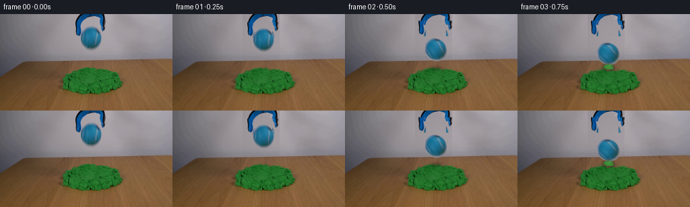
代码变化
--- 上一保存版本
+++ 本次保存版本
@@ -0,0 +1,320 @@
+from __future__ import annotations
+
+from pathlib import Path
+
+import cv2
+import numpy as np
+from PIL import Image
+
+import artifact_io
+
+
+ROOT = Path(__file__).resolve().parent
+WIDTH, HEIGHT = 256, 144
+N_FRAMES, FPS = 20, 4
+
+
+def smoothstep(edge0: float, edge1: float, value: np.ndarray | float):
+ x = np.clip((value - edge0) / (edge1 - edge0), 0.0, 1.0)
+ return x * x * (3.0 - 2.0 * x)
+
+
+def make_clean_plate(source: np.ndarray) -> np.ndarray:
+ """Reconstruct the smooth wall behind the ball, shadow, and tool."""
+ plate = source.copy()
+ yy, xx = np.mgrid[:HEIGHT, :WIDTH]
+
+ # The wall is nearly flat here, so per-row horizontal interpolation gives a
+ # cleaner base than a generic inpaint while preserving the real light falloff.
+ wall = plate.copy()
+ clean_left = source[:, 78:103].astype(np.float32)
+ clean_right = source[:, 160:185].astype(np.float32)
+ left = np.median(clean_left, axis=1)
+ right = np.median(clean_right, axis=1)
+ for y in range(68):
+ t = np.clip((np.arange(WIDTH) - 91.0) / (171.0 - 91.0), 0.0, 1.0)
+ wall[y] = ((1.0 - t[:, None]) * left[y] + t[:, None] * right[y]).astype(np.uint8)
+
+ # Carry over the subtle wall grain from clean areas. Mirroring prevents a
+ # repeated stripe and keeps the reconstruction from looking unnaturally flat.
+ grain = np.zeros((68, WIDTH, 3), dtype=np.float32)
+ left_grain = source[:68, 80:104].astype(np.float32) - cv2.GaussianBlur(
+ source[:68, 80:104].astype(np.float32), (0, 0), 2.0
+ )
+ right_grain = source[:68, 158:182].astype(np.float32) - cv2.GaussianBlur(
+ source[:68, 158:182].astype(np.float32), (0, 0), 2.0
+ )
+ for x in range(WIDTH):
+ if x < 128:
+ grain[:, x] = left_grain[:, (x - 80) % left_grain.shape[1]]
+ else:
+ grain[:, x] = right_grain[:, (x - 158) % right_grain.shape[1]]
+ wall[:68] = np.clip(wall[:68].astype(np.float32) + 0.72 * grain, 0, 255).astype(np.uint8)
+
+ # Everything under the moving foreground is wall. The table and sand begin
+ # below y=67 and are retained byte-for-byte.
+ reveal = (xx >= 104) & (xx <= 158) & (yy < 68)
+ plate[reveal] = wall[reveal]
+
+ return plate
+
+
+def make_tool_layers(source: np.ndarray, plate: np.ndarray):
+ yy, xx = np.mgrid[:HEIGHT, :WIDTH]
+ difference = np.abs(source.astype(np.int16) - plate.astype(np.int16)).sum(axis=2)
+
+ # Split the gripper into a fixed upper body and two side jaws. This permits a
+ # small opening motion without inventing a completely different tool.
+ body = (yy < 18) & (xx >= 107) & (xx <= 155) & (difference > 38)
+ left = (yy >= 12) & (yy < 35) & (xx >= 108) & (xx <= 122) & (difference > 38)
+ right = (yy >= 12) & (yy < 35) & (xx >= 147) & (xx <= 155) & (difference > 38)
+
+ def layer(mask):
+ alpha = mask.astype(np.float32)
+ alpha = cv2.GaussianBlur(alpha, (3, 3), 0.48)
+ rgba = np.dstack([source.astype(np.float32), alpha])
+ return rgba
+
+ return layer(body), layer(left), layer(right)
+
+
+def make_ball_sprite(source: np.ndarray):
+ yy, xx = np.mgrid[:HEIGHT, :WIDTH]
+ cx, cy = 134.5, 35.8
+ rx, ry = 16.4, 18.3
+ radius = np.sqrt(((xx - cx) / rx) ** 2 + ((yy - cy) / ry) ** 2)
+ alpha = 1.0 - smoothstep(0.94, 1.01, radius)
+
+ # Preserve the photographed ball, but keep only its elliptical silhouette.
+ rgba = np.dstack([source.astype(np.float32), alpha.astype(np.float32)])
+ x0, y0, x1, y1 = 116, 15, 153, 56
+ return rgba[y0:y1, x0:x1], (cx - x0, cy - y0), (rx, ry)
+
+
+def paste_rgba(frame: np.ndarray, rgba: np.ndarray, x0: int, y0: int):
+ h, w = rgba.shape[:2]
+ fx0, fy0 = max(0, x0), max(0, y0)
+ fx1, fy1 = min(frame.shape[1], x0 + w), min(frame.shape[0], y0 + h)
+ sx0, sy0 = fx0 - x0, fy0 - y0
+ sx1, sy1 = sx0 + (fx1 - fx0), sy0 + (fy1 - fy0)
+ if fx1 <= fx0 or fy1 <= fy0:
+ return
+ src = rgba[sy0:sy1, sx0:sx1]
+ alpha = src[..., 3:4]
+ dst = frame[fy0:fy1, fx0:fx1].astype(np.float32)
+ frame[fy0:fy1, fx0:fx1] = np.clip(src[..., :3] * alpha + dst * (1.0 - alpha), 0, 255).astype(np.uint8)
+
+
+def transform_ball(sprite, center_in_sprite, scale_x, scale_y, angle, center_x, center_y):
+ rgba, (scx, scy), _ = sprite
+ h, w = rgba.shape[:2]
+ matrix = cv2.getRotationMatrix2D((scx, scy), angle * 180.0 / np.pi, 1.0)
+ matrix[0, 0] *= scale_x
+ matrix[0, 1] *= scale_x
+ matrix[1, 0] *= scale_y
+ matrix[1, 1] *= scale_y
+ matrix[0, 2] += center_x - scx
+ matrix[1, 2] += center_y - scy
+ return cv2.warpAffine(
+ rgba,
+ matrix,
+ (WIDTH, HEIGHT),
+ flags=cv2.INTER_LINEAR,
+ borderMode=cv2.BORDER_CONSTANT,
+ borderValue=(0, 0, 0, 0),
+ )
+
+
+def sand_mask(source: np.ndarray) -> np.ndarray:
+ rgb = source.astype(np.int16)
+ r, g, b = rgb[..., 0], rgb[..., 1], rgb[..., 2]
+ mask = (g - r > 16) & (g - b > 12) & (g > 42)
+ mask = mask.astype(np.uint8) * 255
+ mask = cv2.morphologyEx(mask, cv2.MORPH_CLOSE, np.ones((5, 5), np.uint8))
+ contours, _ = cv2.findContours(mask, cv2.RETR_EXTERNAL, cv2.CHAIN_APPROX_SIMPLE)
+ filled = np.zeros_like(mask)
+ cv2.drawContours(filled, contours, -1, 255, -1)
+ filled = cv2.GaussianBlur(filled, (5, 5), 1.0)
+ return filled.astype(np.float32) / 255.0
+
+
+def deform_sand(image: np.ndarray, mask: np.ndarray, depth: float, phase: float, decay: float):
+ if depth < 0.03 and abs(phase) < 0.03:
+ return image
+ h, w = image.shape[:2]
+ yy, xx = np.mgrid[:h, :w].astype(np.float32)
+ cx, cy = 134.5, 82.0
+ dx, dy = xx - cx, yy - cy
+ gaussian = np.exp(-(dx / 18.0) ** 2 - (dy / 21.0) ** 2)
+ radial = np.sqrt(dx * dx + dy * dy)
+
+ # Downward indentation near the contact plus a weak outward squeeze.
+ ripple = 0.0
+ if abs(phase) > 0.01:
+ ripple = 2.2 * phase * decay * np.sin(radial * 0.47 - phase * 4.0) * np.exp(-radial / 19.0)
+
+ map_x = (xx - 0.075 * dx * gaussian).astype(np.float32)
+ map_y = (yy - depth * gaussian + ripple).astype(np.float32)
+ warped = cv2.remap(image, map_x, map_y, cv2.INTER_LINEAR, borderMode=cv2.BORDER_REFLECT)
+ alpha = mask[..., None]
+ return np.clip(warped.astype(np.float32) * alpha + image.astype(np.float32) * (1 - alpha), 0, 255).astype(np.uint8)
+
+
+def add_contact_shadow(image: np.ndarray, x: float, y: float, strength: float, width: float):
+ if strength <= 0:
+ return image
+ h, w = image.shape[:2]
+ yy, xx = np.mgrid[:h, :w].astype(np.float32)
+ spot = np.exp(-(((xx - x) / width) ** 2 + ((yy - y) / (width * 0.42)) ** 2) * 1.7)
+ tint = np.array([0.39, 0.52, 0.27], dtype=np.float32)
+ out = image.astype(np.float32)
+ out = out * (1.0 - 0.42 * strength * spot[..., None]) + tint * (0.16 * strength * spot[..., None])
+ return np.clip(out, 0, 255).astype(np.uint8)
+
+
+def make_particles(contact_time: float):
+ rng = np.random.default_rng(1709)
+ particles = []
+ for _ in range(34):
+ angle = rng.uniform(-np.pi * 0.93, -np.pi * 0.07)
+ speed = rng.uniform(17.0, 52.0)
+ particles.append(
+ {
+ "vx": np.cos(angle) * speed,
+ "vy": np.sin(angle) * speed,
+ "life": rng.uniform(0.55, 1.15),
+ "delay": rng.uniform(0.0, 0.10),
+ "size": rng.uniform(0.75, 1.75),
+ "g": rng.uniform(85.0, 145.0),
+ "tone": rng.uniform(0.82, 1.16),
+ }
+ )
+ return particles, contact_time
+
+
+def draw_particles(image: np.ndarray, particles, contact_time: float, time_s: float):
+ age = time_s - contact_time
+ if age <= 0 or age > 1.35:
+ return image
+ overlay = np.zeros_like(image, dtype=np.float32)
+ glow = np.zeros_like(image, dtype=np.float32)
+ base = np.array([48.0, 118.0, 47.0], dtype=np.float32)
+ for particle in particles:
+ local_age = age - particle["delay"]
+ if local_age <= 0 or local_age >= particle["life"]:
+ continue
+ x = 134.5 + particle["vx"] * local_age
+ y = 80.5 + particle["vy"] * local_age + 0.5 * particle["g"] * local_age * local_age
+ fade = (1.0 - local_age / particle["life"]) ** 0.75
+ color = np.clip(base * particle["tone"], 0, 255)
+ radius = max(1, int(round(particle["size"] + 0.7 * fade)))
+ cv2.circle(overlay, (int(round(x)), int(round(y))), radius, color.tolist(), -1, cv2.LINE_AA)
+ cv2.circle(glow, (int(round(x)), int(round(y))), radius + 2, (color * 0.22).tolist(), -1, cv2.LINE_AA)
+ glow = cv2.GaussianBlur(glow, (0, 0), 1.4)
+ combined = np.clip(overlay + glow, 0, 255)
+ alpha = np.clip(combined.max(axis=2) / 80.0, 0, 1)[..., None] * 0.88
+ return np.clip(image.astype(np.float32) * (1 - alpha) + combined * alpha, 0, 255).astype(np.uint8)
+
+
+def add_temporal_grain(frame: np.ndarray, index: int) -> np.ndarray:
+ if index == 0:
+ return frame
+ rng = np.random.default_rng(31000 + index * 97)
+ noise = rng.normal(0.0, 0.72, frame.shape[:2])[..., None]
+ return np.clip(frame.astype(np.float32) + noise, 0, 255).astype(np.uint8)
+
+
+def trajectory(time_s: float):
+ release = 0.10
+ gravity = 210.0
+ y0 = 35.8
+ contact_y = 62.8
+ drop = contact_y - y0
+ contact_time = release + np.sqrt(2.0 * drop / gravity)
+ if time_s < release:
+ return y0, 0.0, 0.0, contact_time
+ if time_s < contact_time:
+ dt = time_s - release
+ y = y0 + 0.5 * gravity * dt * dt
+ return y, 0.0, 0.0, contact_time
+
+ impact_speed = np.sqrt(2.0 * gravity * drop)
+ rebound_speed = 0.42 * impact_speed
+ bounce_duration = 2.0 * rebound_speed / gravity
+ dt = time_s - contact_time
+ if dt < bounce_duration:
+ y = contact_y - rebound_speed * dt + 0.5 * gravity * dt * dt
+ return y, dt, 1.0 - dt / bounce_duration, contact_time
+ settle = min(1.0, (dt - bounce_duration) / 0.28)
+ y = contact_y + 0.7 * (1.0 - np.exp(-6.0 * (dt - bounce_duration))) - 0.25 * settle
+ return y, dt, 0.0, contact_time
+
+
+def main():
+ source = np.asarray(Image.open(ROOT / "first_frame.png").convert("RGB"))
+ assert source.shape == (HEIGHT, WIDTH, 3)
+
+ plate = make_clean_plate(source)
+ tool_body, tool_left, tool_right = make_tool_layers(source, plate)
+ ball_sprite = make_ball_sprite(source)
+ sand_alpha = sand_mask(source)
+ particles, contact_time = make_particles(0.0)
+ contact_time = trajectory(0.0)[3]
+ particles, contact_time = make_particles(contact_time)
+
+ frames = []
+ for index in range(N_FRAMES):
+ time_s = index / FPS
+ if index == 0:
+ frames.append(source.copy())
+ continue
+
+ frame = plate.copy()
+
+ y, since_impact, rebound_phase, _ = trajectory(time_s)
+ impact_active = max(0.0, min(1.0, (since_impact + 0.03) / 0.12)) if since_impact >= 0 else 0.0
+ recovery = np.exp(-max(0.0, since_impact - 0.10) / 0.34)
+ depth = 4.3 * impact_active * (0.55 + 0.45 * recovery)
+ ripple_phase = min(1.6, since_impact * 4.4) if since_impact >= 0 else 0.0
+ frame = deform_sand(frame, sand_alpha, depth, ripple_phase, recovery)
+
+ # The contact shadow grows as the ball descends and softens after impact.
+ if time_s < contact_time:
+ approach = smoothstep(0.18, contact_time, time_s)
+ shadow_strength = 0.16 + 0.50 * approach
+ shadow_width = 8.0 + 6.0 * approach
+ else:
+ shadow_strength = 0.62 * np.exp(-max(0.0, since_impact - 0.08) / 0.55)
+ shadow_width = 13.5
+ frame = add_contact_shadow(frame, 134.5, 80.5, shadow_strength, shadow_width)
+
+ # The jaws open over the first half second while the ball is released.
+ opening = smoothstep(0.10, 0.64, time_s)
+ body_shift = int(round(-2.0 * opening))
+ jaw_shift = int(round(3.2 * opening))
+ paste_rgba(frame, tool_body, 0, body_shift)
+ paste_rgba(frame, tool_left, -jaw_shift, body_shift)
+ paste_rgba(frame, tool_right, jaw_shift, body_shift)
+
+ # Squash is brief and restrained; the sand remains the dominant damping.
+ if contact_time <= time_s < contact_time + 0.16:
+ squash = 1.0 - 0.10 * np.exp(-((time_s - contact_time) / 0.07) ** 2)
+ scale_x, scale_y = 1.0 + (1.0 - squash) * 0.55, squash
+ elif contact_time + 0.38 <= time_s < contact_time + 0.55:
+ squash = 0.965
+ scale_x, scale_y = 1.018, squash
+ else:
+ scale_x, scale_y = 1.0, 1.0
+
+ angle = 0.040 * max(0.0, y - 35.8)
+ ball_layer = transform_ball(ball_sprite, None, scale_x, scale_y, angle, 134.5, y)
+ paste_rgba(frame, ball_layer, 0, 0)
+ frame = draw_particles(frame, particles, contact_time, time_s)
+
+ frames.append(add_temporal_grain(frame, index))
+
+ artifact_io.save(np.asarray(frames, dtype=np.uint8), ROOT)
+
+
+if __name__ == "__main__":
+ main()
可观测工具行为
命令 1 · 2026-11-08T20:40:17.856634+00:00/bin/bash -c "pwd && rg --files -g '"'!*.mp4'"' -g '"'!*.mov'"' -g '"'!*.webm'"' | sed -n '1,200p'"
exit 0 命令 2 · 2026-11-08T20:40:18.180238+00:00/bin/bash -c "printf '%s\\n' '--- prompt.txt ---'; sed -n '1,240p' prompt.txt; printf '%s\\n' '--- GENERATION_RULES.md ---'; sed -n '1,320p' GENERATION_RULES.md"
exit 0 命令 3 · 2026-11-08T20:40:18.739560+00:00/bin/bash -c "find . -maxdepth 2 -type f -printf '%p %s bytes\\n' | sort | sed -n '1,240p'"
exit 0 命令 4 · 2026-11-08T20:40:26.730023+00:00/bin/bash -c "sed -n '1,260p' artifact_io.py"
exit 0 命令 5 · 2026-11-08T20:40:26.928537+00:00/bin/bash -c "sed -n '1,260p' player_template.html"
exit 0 命令 6 · 2026-11-08T20:40:27.222520+00:00/bin/bash -c "file first_frame.png && python - <<'PY'
from PIL import Image
im=Image.open('first_frame.png').convert('RGB')
print(im.size)
print(im.getpixel((128,55)), im.getpixel((128,100)), im.getpixel((128,135)), im.getpixel((10,10)))
PY"exit 127 命令 7 · 2026-11-08T20:40:42.252474+00:00/bin/bash -c "python - <<'PY'
mods=['numpy','PIL','cv2','scipy','skimage']
for m in mods:
try:
mod=__import__(m)
print(m, getattr(mod,'__version__','ok'))
except Exception as e: print(m, 'MISSING', e)
PY"exit 0 命令 8 · 2026-11-08T20:41:03.333920+00:00/bin/bash -c "python - <<'PY'
from PIL import Image
im=Image.open('first_frame.png').convert('RGB')
im.crop((80,0,176,100)).resize((384,400), Image.Resampling.NEAREST).save('.tmp/object_crop.png')
im.crop((78,72,195,132)).resize((468,240), Image.Resampling.NEAREST).save('.tmp/sand_crop.png')
PY"exit 0 命令 9 · 2026-11-08T20:41:12.253781+00:00/bin/bash -c "python - <<'PY'
import cv2, numpy as np
im=cv2.imread('first_frame.png')[:,:,::-1]
# report HSV/RGB grid / clusters around ball
for y in [18,22,25,28,30,34,38,42,46,50,54,58,62,66,70,74,78]:
pts=[]
for x in range(110,148):
r,g,b=im[y,x]
if b>r*1.25 and b>g*1.02 and b>50: pts.append(x)
if pts: print(y,min(pts),max(pts), im[y,(min(pts)+max(pts))//2])
# most common pixels regions
for name,box in [('ball',(120,32,144,64)),('sand',(100,86,175,122)),('table',(0,90,80,144)),('wall',(0,0,80,70)),('grip',(110,0,145,25))]:
x0,y0,x1,y1=box; arr=im[y0:y1,x0:x1].reshape(-1,3)
print(name,'mean',arr.mean(0).round(1),'median',np.median(arr,0),'std',arr.std(0).round(1))
PY"exit 0 命令 10 · 2026-11-08T20:41:16.702697+00:00/bin/bash -c "python - <<'PY'
from PIL import Image
im=Image.open('first_frame.png').convert('RGB')
# more precise ball and gripper region with grid maybe save scaling nearest
im.crop((105,0,153,82)).resize((480,820), Image.Resampling.NEAREST).save('.tmp/gripper_detail.png')
PY"exit 0 命令 11 · 2026-11-08T20:41:59.194061+00:00/bin/bash -c "python - <<'PY'
from PIL import Image
import numpy as np, cv2
im=np.asarray(Image.open('first_frame.png').convert('RGB'))
r,g,b=[im[:,:,i].astype(int) for i in range(3)]
Y,X=np.mgrid[:144,:256]
ball=((X-132.5)**2+(Y-50.5)**2)<16.2**2
roi=(X>=107)&(X<=153)&(Y<=45)
blue=(b-r>28)&(b-g>12)&(g-r>8)&(b>50)
dark=(r+g+b<235)
grip=(blue|dark)&roi&~ball
# clean little bits, maybe only components touching top
u=(grip.astype(np.uint8)*255)
u=cv2.morphologyEx(u,cv2.MORPH_OPEN,np.ones((2,2),np.uint8))
num,lab,stats,cen=cv2.connectedComponentsWithStats(u)
keep=np.zeros_like(u)
for i in range(1,num):
x,y,w,h,a=stats[i]
if a>=3 and y<20: keep[lab==i]=255
# include everything not wall threshold? save
out=np.zeros((144,256,3),np.uint8)
out[keep>0]=im[keep>0]
out[:50,100:160][keep[:50,100:160]==0]=(255,0,255)
Image.fromarray(out).crop((100,0,160,50)).resize((480,400),Image.Resampling.NEAREST).save('.tmp/grip_mask.png')
print('pixels',keep.sum()/255)
PY"exit 0 命令 12 · 2026-11-08T20:42:10.461731+00:00/bin/bash -c "python - <<'PY'
from PIL import Image
import numpy as np, cv2
im=np.asarray(Image.open('first_frame.png').convert('RGB')).astype(np.int16)
# background estimate from smooth median around each pixel? wall image varies; use pre-roll wall crop (0:70) to inpaint foreground.
# Simply use cv2 inpaint after mask; mask based on grip colors / location.
r,g,b=im[:,:,0],im[:,:,1],im[:,:,2]
Y,X=np.mgrid[:144,:256]
region=(X>=105)&(X<=155)&(Y<=50)
mask=region & ((b-r>20)&(b-g>5)&(g-r>3)&(b>45) | ((r+g+b<300)&(Y<42)))
# mask needs to include shadows, blue body all.
mask=cv2.dilate(mask.astype(np.uint8),np.ones((3,3),np.uint8),iterations=1)>0
bg=cv2.inpaint(np.asarray(im,np.uint8),mask.astype(np.uint8),5,cv2.INPAINT_TELEA)
# make only within region inpaint
out=im.copy(); out[mask]=bg[mask]
Image.fromarray(out.astype(np.uint8)).crop((95,0,165,60)).resize((560,480),Image.Resampling.NEAREST).save('.tmp/grip_bg.png')
Image.fromarray(out.astype(np.uint8)).save('.tmp/base_without_grip.png')
PY"exit 0 命令 13 · 2026-11-08T20:42:17.968869+00:00/bin/bash -c "python - <<'PY'
from PIL import Image
import numpy as np
im=np.asarray(Image.open('first_frame.png').convert('RGB'))
for y in range(20,77):
seg=im[y,115:150]
# colorful blue or dark
score=((seg[:,2].astype(int)-seg[:,0]) + (seg[:,1].astype(int)-seg[:,0]))
xs=np.where((seg[:,0]<120) & ((seg[:,2].astype(int)-seg[:,0]>8)|(seg[:,1].astype(int)-seg[:,0]>8)))[0]+115
if len(xs): print(f'{y:02d}: {xs.min()}-{xs.max()} n={len(xs)} center={im[y,132]}')
PY"exit 0 命令 14 · 2026-11-08T20:42:21.972270+00:00/bin/bash -c "python - <<'PY'
from PIL import Image
import numpy as np
im=np.asarray(Image.open('first_frame.png').convert('RGB'))
# Print crop grid every 2 px with coordinate rulers
crop=im[0:82,105:155]
for y in range(0,82,4):
print(f'{y:3d} ', ' '.join(f'{crop[y,x,2]-crop[y,x,0]:+3d}' for x in range(0,50,2)))
PY"exit 0 命令 15 · 2026-11-08T20:42:26.670642+00:00/bin/bash -c "python - <<'PY'
from PIL import Image
import numpy as np
im=np.asarray(Image.open('first_frame.png').convert('RGB')).astype(np.int16)
# inspect color separability against local wall
for y in [8,12,16,20,24,28,32,36,40,44,48]:
row=[]
for x in range(108,152,2):
r,g,b=im[y,x]
if b-r>20 and g-r>5: row.append('B')
elif r+g+b<250: row.append('K')
elif g-r>20: row.append('G')
elif abs(int(b)-int(r))<12 and r>75: row.append('.')
else: row.append(' ')
print(f'{y:02d} '+''.join(row))
PY"exit 0 命令 16 · 2026-11-08T20:42:31.896508+00:00/bin/bash -c "python - <<'PY'
from PIL import Image
import numpy as np
im=np.asarray(Image.open('first_frame.png').convert('RGB')).astype(int)
# per pixel background estimation via horizontal median far from object, linear-ish wall shading
# report ball region silhouette with custom color distance to local background sampled row means sides
for y in range(18,58):
left=im[y,110:116].mean(0); right=im[y,147:153].mean(0)
# print likely object if distance to interp bg > 30
xs=[]
for x in range(115,151):
t=(x-110)/43
bg=left*(1-t)+right*t
d=np.linalg.norm(im[y,x]-bg)
if d>28: xs.append(x)
if xs: print(y,min(xs),max(xs),len(xs))
PY"exit 0 命令 17 · 2026-11-08T20:42:37.068617+00:00/bin/bash -c "python - <<'PY'
from PIL import Image
import numpy as np
im=np.asarray(Image.open('first_frame.png').convert('RGB'))
for p in [(132,50),(132,54),(130,58),(134,58),(132,62),(132,66),(132,70),(132,72),(132,76),(132,78),(132,80),(132,82),(132,84),(132,86),(132,88),(132,90),(132,92),(132,94),(132,96),(132,98),(132,100),(132,102),(132,104),(132,106),(132,108),(132,110),(132,112),(132,114),(132,116),(132,118),(132,120)]:
print(p, im[p[1],p[0]])
PY"exit 0 命令 18 · 2026-11-08T20:42:43.246303+00:00/bin/bash -c "python - <<'PY'
import numpy as np, cv2
from PIL import Image
im=np.asarray(Image.open('first_frame.png').convert('RGB')).astype(np.int16)
Y,X=np.mgrid[:144,:256]
# remove ball+tool by model: use soft mask then inpaint to inspect static base
ball=(((X-132.5)/15.0)**2+((Y-47.5)/13.5)**2)<1.18
region=(X>=106)&(X<=155)&(Y<57)
# broad foreground mask around ball/blue/dark
r,g,b=im[:,:,0],im[:,:,1],im[:,:,2]
blue=(b-r>12)&(g-r>3)&(b>35)
dark=(r+g+b<275)
mask=region & (ball | blue | dark)
# include anything connected within region, and top tool down to y20
mask=cv2.morphologyEx(mask.astype(np.uint8),cv2.MORPH_CLOSE,np.ones((3,3),np.uint8))>0
bg=cv2.inpaint(np.asarray(im,np.uint8),mask.astype(np.uint8),7,cv2.INPAINT_TELEA)
out=im.copy(); out[mask]=bg[mask]
Image.fromarray(out.astype(np.uint8)).save('.tmp/base_clean.png')
Image.fromarray(out.astype(np.uint8)).crop((90,0,175,90)).resize((510,540),Image.Resampling.NEAREST).save('.tmp/base_clean_crop.png')
# make masks overlay
ov=np.asarray(im,np.uint8).copy(); ov[mask]=(ov[mask]*.3+np.array([255,0,255])*.7).astype(np.uint8)
Image.fromarray(ov).crop((90,0,175,90)).resize((510,540),Image.Resampling.NEAREST).save('.tmp/mask_overlay.png')
PY"exit 0 命令 19 · 2026-11-08T20:43:22.947256+00:00/bin/bash -c "python - <<'PY'
import cv2, numpy as np
from PIL import Image
im=np.asarray(Image.open('first_frame.png').convert('RGB'))
h,w=im.shape[:2]; Y,X=np.mgrid[:h,:w]
mask=(((X-132.7)/15.2)**2+((Y-47.3)/14.4)**2<1.0)
# shadow underneath: preserve tool? remove local shadow only under y54-68
mask |= (((X-132.5)/15.0)**2+((Y-61.0)/8.5)**2<1.0)
mask &= ~((Y<54)&((X<118)|(X>147))) # not really
# remove ball and shadow but avoid dark tool strokes? no
m=cv2.GaussianBlur(mask.astype(np.float32),(5,5),1.0)
hard=m>0.05
base=cv2.inpaint(im,hard.astype(np.uint8)*255,7,cv2.INPAINT_TELEA)
# blend feather
a=np.clip((m-0.02)/0.5,0,1)[...,None]
out=(base*a+im*(1-a)).astype(np.uint8)
Image.fromarray(out).save('.tmp/clean2.png')
Image.fromarray(out).crop((95,0,165,80)).resize((560,640),Image.Resampling.NEAREST).save('.tmp/clean2_crop.png')
ov=im.copy(); ov[hard]=(ov[hard]*.3+np.array([255,0,255])*.7).astype(np.uint8)
Image.fromarray(ov).crop((95,0,165,80)).resize((560,640),Image.Resampling.NEAREST).save('.tmp/clean2_mask.png')
PY"exit 0 命令 20 · 2026-11-08T20:43:36.732067+00:00/bin/bash -c "python - <<'PY'
import cv2, numpy as np
from PIL import Image
im=np.asarray(Image.open('first_frame.png').convert('RGB'))
# manually polygon mask for tool, avoiding ball
poly=np.array([[107,0],[154,0],[154,22],[149,44],[144,53],[138,54],[132,54],[126,54],[120,53],[119,46],[120,34],[118,24],[113,17],[107,11]],np.int32)
mask=np.zeros(im.shape[:2],np.uint8); cv2.fillPoly(mask,[poly],255)
# only cut above ball y54; below no tool except ball
mask[55:]=0
# inpaint tool via horizontal/vertical interpolation
base=cv2.inpaint(im,mask,5,cv2.INPAINT_TELEA)
# ball mask for separate step
Y,X=np.mgrid[:144,:256]
ball=(((X-132.5)/15.2)**2+((Y-46.7)/13.2)**2<1.0).astype(np.uint8)*255
ball=cv2.GaussianBlur(ball,(3,3),0.6)
hard=ball>30
base2=cv2.inpaint(base,hard.astype(np.uint8)*255,6,cv2.INPAINT_TELEA)
a=(ball.astype(np.float32)/255)[...,None]
out=(base2*a+base*(1-a)).astype(np.uint8)
Image.fromarray(out).save('.tmp/base3.png')
Image.fromarray(out).crop((95,0,170,90)).resize((600,720),Image.Resampling.NEAREST).save('.tmp/base3_crop.png')
PY"exit 0 命令 21 · 2026-11-08T20:44:06.488606+00:00/bin/bash -c "python - <<'PY'
from PIL import Image
import numpy as np
im=np.asarray(Image.open('first_frame.png').convert('RGB'))
for y in range(14,25):
print(y, [(x,tuple(im[y,x])) for x in [125,128,130,132,134,136,139]])
PY"exit 0 命令 22 · 2026-11-08T20:44:11.478673+00:00/bin/bash -c "python - <<'PY'
from PIL import Image
import numpy as np
im=np.asarray(Image.open('first_frame.png').convert('RGB')).astype(int)
# list pixel color matrix around ball center rows 35-58
for y in [34,38,42,46,50,52,54,56]:
print('y',y)
for x in range(118,149,3): print(x, tuple(im[y,x]), end=' | ')
print()
PY"exit 0 命令 23 · 2026-11-08T20:44:17.080828+00:00/bin/bash -c "python - <<'PY'
from PIL import Image
import numpy as np
im=np.asarray(Image.open('first_frame.png').convert('RGB')).astype(int)
# find wall bg via columns outside obj and interpolate; color norm distance, print contours of likely ball excluding gripper using rough ellipse
Y,X=np.mgrid[:144,:256]
for y in range(18,56):
left=im[y,108:115].mean(0); right=im[y,148:155].mean(0)
vals=[]
for x in range(110,155):
t=(x-108)/47
bg=left*(1-t)+right*t
d=np.linalg.norm(im[y,x]-bg)
if d>15: vals.append(x)
if vals: print(y, min(vals), max(vals), len(vals))
PY"exit 0 命令 24 · 2026-11-08T20:44:24.237672+00:00/bin/bash -c "python - <<'PY'
import numpy as np, cv2
from PIL import Image
im=np.asarray(Image.open('first_frame.png').convert('RGB'))
h,w=im.shape[:2]; Y,X=np.mgrid[:h,:w]
# 1 manually inpaint full ball ellipse, including shadow; we'll recreate ball + shadow later
ballmask=((X-132.5)/15.8)**2+((Y-46.5)/13.5)**2<1.1
shadow=((X-132.5)/15.2)**2+((Y-58)/9.0)**2<1.0
# tool mask polygon above ball, all down to y45
tool=np.zeros((h,w),np.uint8)
poly=np.array([[107,0],[154,0],[154,22],[150,38],[147,48],[142,54],[126,54],[120,48],[119,37],[117,27],[112,21],[107,13]],np.int32)
cv2.fillPoly(tool,[poly],255)
m=((ballmask|shadow)|(tool>0)).astype(np.uint8)*255
# exclude wall strips? no
base=cv2.inpaint(im,m,7,cv2.INPAINT_TELEA)
# Correct inpaint wall flat region using nearby median background where ball area
# Build wall background from each row polynomial median around x 105-160 excluding object regions
# use horizontal linear interpolation across mask from left and right edge per row
wall=np.zeros_like(im)
for y in range(0,68):
valid=np.where(m[y]==0)[0]
if len(valid):
wall[y]=np.median(im[y,valid],axis=0)
# model smooth wall from inpaint maybe fine
# blend only ball+shadow with inpaint; leave tool region as inpaint
Image.fromarray(base).save('.tmp/base4.png')
Image.fromarray(base).crop((95,0,170,90)).resize((600,720),Image.Resampling.NEAREST).save('.tmp/base4_crop.png')
PY"exit 0 命令 25 · 2026-11-08T20:44:33.592293+00:00/bin/bash -c "python - <<'PY'
import numpy as np, cv2
from PIL import Image
im=np.asarray(Image.open('first_frame.png').convert('RGB'))
h,w=im.shape[:2]; Y,X=np.mgrid[:h,:w]
# full foreground mask: tool + ball + shadow, only around center. Ball silhouette by color difference to wall, use ellipse.
toolpoly=np.array([[108,0],[154,0],[154,18],[150,35],[147,47],[143,54],[121,54],[118,46],[119,36],[116,28],[111,21],[108,13]],np.int32)
tool=np.zeros((h,w),np.uint8); cv2.fillPoly(tool,[toolpoly],255)
# Actual ball ellipse perhaps y32..54 x119..150
ell=(((X-134.2)/15.8)**2+((Y-43.5)/12.5)**2<1.06)
# shadow below ball
shadow=(((X-133.0)/13.0)**2+((Y-56.5)/7.0)**2<1.0)
mask=(tool>0)|ell|shadow
# fill rough dilation
mask=cv2.dilate(mask.astype(np.uint8),np.ones((3,3),np.uint8))>0
base=cv2.inpaint(im,mask.astype(np.uint8)*255,5,cv2.INPAINT_TELEA)
Image.fromarray(base).save('.tmp/base5.png')
Image.fromarray(base).crop((95,0,170,90)).resize((600,720),Image.Resampling.NEAREST).save('.tmp/base5_crop.png')
# overlay mask
ov=im.copy();ov[mask]=(ov[mask]*.4+np.array([255,0,255])*.6).astype(np.uint8)
Image.fromarray(ov).crop((95,0,170,90)).resize((600,720),Image.Resampling.NEAREST).save('.tmp/base5_mask.png')
PY"exit 0 命令 26 · 2026-11-08T20:44:45.174067+00:00/bin/bash -c "python - <<'PY'
from PIL import Image
import numpy as np
im=np.asarray(Image.open('first_frame.png').convert('RGB')).astype(float)
# Compute local background color per row from x=90:105 and x=160:180, linear model, output difference maps as grayscale and false color
h,w=im.shape[:2]
bg=np.zeros_like(im)
for y in range(0,70):
l=np.median(im[y,90:105],0); r=np.median(im[y,160:180],0)
for x in range(256): bg[y,x]=l+(r-l)*(x-97)/(170-97)
d=np.linalg.norm(im-bg,axis=2)
# only 100:165, 0:70
roi=d[0:70,100:165]
# normalize and save
Image.fromarray(np.clip(roi*3,0,255).astype(np.uint8)).resize((520,560),Image.Resampling.NEAREST).save('.tmp/diff.png')
# mask via diff > threshold then list bboxes
for th in [10,15,20,25,30,40]:
m=d>th
ys,xs=np.where(m & (np.indices(m.shape)[1]>=100)&(np.indices(m.shape)[1]<165)&(np.indices(m.shape)[0]<70))
print(th, (xs.min(),ys.min(),xs.max(),ys.max()), len(xs))
PY"exit 0 命令 27 · 2026-11-08T20:44:53.823198+00:00/bin/bash -c "python - <<'PY'
from PIL import Image
import numpy as np
im=np.asarray(Image.open('first_frame.png').convert('RGB'))
# print crop in ascii using chroma classes and brightness around ball
for y in range(28,58):
s=''
for x in range(112,155):
r,g,b=im[y,x].astype(int)
if b-r>20 and g-r>5: c='B' if r<70 else 'b'
elif r+g+b<240: c='K'
elif r+g+b>450: c='.'
elif g>r+20: c='G'
else: c=','
s+=c
print(f'{y:02d} {s}')
PY"exit 0 命令 28 · 2026-11-08T20:44:58.982693+00:00/bin/bash -c "python - <<'PY'
from PIL import Image
import numpy as np
im=np.asarray(Image.open('first_frame.png').convert('RGB'))
for y in [17,18,19,20,21,22,24,26,28,30,32,34,36,38,40,42,44,46,48,50,52,54]:
# spans of non-wall based on blue/dark threshold, x 110-154
vals=[]
for x in range(108,155):
r,g,b=im[y,x].astype(int)
if (b-r>15 and b>60) or (r+g+b<280): vals.append(x)
# group
groups=[]
for x in vals:
if not groups or x>groups[-1][-1]+1: groups.append([x])
else: groups[-1].append(x)
print(y,[(g[0],g[-1]) for g in groups])
PY"exit 0 命令 29 · 2026-11-08T20:45:04.228468+00:00/bin/bash -c "python - <<'PY'
from PIL import Image
import numpy as np
im=np.asarray(Image.open('first_frame.png').convert('RGB')).astype(float)
for y in [17,18,19,20,22,24,26,28,30,32,34,36,38,40,42,44,46,48,50,52,54]:
# print each x RGB for 118:152 compact colored class maybe enough
s=''
for x in range(115,153):
r,g,b=im[y,x]
if b-r>25 and g-r>5:
if r<35: c='B'
elif r<55: c='b'
else: c='b'
elif r+g+b<300: c='K'
elif r+g+b<390: c='k'
elif g>r+20: c='G'
elif abs(b-r)<10 and r>100: c='.'
else: c=','
s+=c
print(f'{y:02d} {s}')
PY"exit 0 命令 30 · 2026-11-08T20:45:10.237302+00:00/bin/bash -c "python - <<'PY'
from PIL import Image
import numpy as np
im=np.asarray(Image.open('first_frame.png').convert('RGB')).astype(int)
# use grid values for ball: inspect edge positions manually: show full rows with x labels every 5
print(' '+''.join(str((x//10)%10) for x in range(115,153)))
print(' '+''.join(str(x%10) for x in range(115,153)))
for y in range(18,56):
s=''
for x in range(115,153):
r,g,b=im[y,x]
if b-r>22 and g-r>4: c='B'
elif r+g+b<280: c='K'
elif r+g+b<360: c='k'
elif g>r+15: c='G'
elif b-r>5: c=','
else: c='.'
s+=c
print(f'{y:02d} {s}')
PY"exit 0 命令 31 · 2026-11-08T20:45:16.711500+00:00/bin/bash -c "python - <<'PY'
import numpy as np, cv2
from PIL import Image
im=np.asarray(Image.open('first_frame.png').convert('RGB'))
h,w=im.shape[:2];Y,X=np.mgrid[:h,:w]
# tight tool mask based on color classes, top region only. use polygon excluding actual ball from y31 downward
poly=np.array([[107,0],[154,0],[154,17],[150,27],[150,32],[152,40],[150,48],[146,53],[141,54],[125,54],[120,48],[119,39],[119,29],[116,23],[111,18],[107,13]],np.int32)
mask=np.zeros((h,w),np.uint8);cv2.fillPoly(mask,[poly],255)
# then overwrite ball exact ellipse region by 0? no tool behind ball unknown but we'll paste ball sprite
# first remove tool only y<=31, keep ball in source
mask[:32]=mask[:32]
mask[32:]=0
base=cv2.inpaint(im,mask,5,cv2.INPAINT_TELEA)
# ball mask ellipse
ball=(((X-134.0)/15.7)**2+((Y-40.5)/11.7)**2<1.0)
# shadow/ball lower section manually ellipse y32-54 x119-151
ball |= (((X-134.5)/15.8)**2+((Y-44.0)/13.0)**2<1.0)
# We'll keep ball exact from source now; output only base plate to inspect tool removal
Image.fromarray(base).save('.tmp/base6.png')
Image.fromarray(base).crop((100,0,165,65)).resize((520,520),Image.Resampling.NEAREST).save('.tmp/base6_crop.png')
PY"exit 0 命令 32 · 2026-11-08T20:45:29.561457+00:00/bin/bash -c "python - <<'PY'
import numpy as np, cv2
from PIL import Image
im=np.asarray(Image.open('first_frame.png').convert('RGB'))
h,w=im.shape[:2];Y,X=np.mgrid[:h,:w]
# Ball mask explicitly from threshold + fill ellipse where appropriate
r,g,b=[im[:,:,i].astype(np.int16) for i in range(3)]
blue=(b-r>15)&(g-r>3)&(b>40)
region=(X>=118)&(X<=152)&(Y>=17)&(Y<=54)
bm=(blue®ion).astype(np.uint8)
# include shadow region (dark relative to wall)
bm |= ((((X-133)/15.5)**2+((Y-46)/13.0)**2<1.0) & region).astype(np.uint8)
# clean and make ellipse outline approximated
# Create exact ball sprite mask from ellipse, but cut around actual silhouette manually with polygon smoother
ell=(((X-134.2)/16.0)**2+((Y-35.0)/18.0)**2<1.0)
ell &= Y<54
# foreground mask includes tool top and ball
mask=ell.copy()
# tool region top y<20 x112..153 and edges down y31
mask |= (Y<20)&(X>=109)&(X<=154)
# Add two jaws around ball
mask |= (Y<32)&(((X>=112)&(X<=121))|((X>=148)&(X<=154)))
mask = cv2.morphologyEx(mask.astype(np.uint8), cv2.MORPH_CLOSE, np.ones((3,3),np.uint8))>0
base=cv2.inpaint(im,mask.astype(np.uint8)*255,5,cv2.INPAINT_TELEA)
Image.fromarray(base).save('.tmp/base7.png')
Image.fromarray(base).crop((100,0,165,65)).resize((520,520),Image.Resampling.NEAREST).save('.tmp/base7_crop.png')
ov=im.copy();ov[mask]=(ov[mask]*.4+np.array([255,0,255])*.6).astype(np.uint8)
Image.fromarray(ov).crop((100,0,165,65)).resize((520,520),Image.Resampling.NEAREST).save('.tmp/base7_mask.png')
PY"exit 0 命令 33 · 2026-11-08T20:47:15.818920+00:00/bin/bash -c 'python generate.py'
exit 1 命令 34 · 2026-11-08T20:47:25.369204+00:00/bin/bash -c 'python generate.py'
exit 0 命令 35 · 2026-11-08T20:47:36.073287+00:00/bin/bash -c "python - <<'PY'
from PIL import Image
Image.open('frames/05.png').resize((768,432),Image.Resampling.NEAREST).save('.tmp/frame05.png')
PY"exit 0 命令 36 · 2026-11-08T20:47:44.816016+00:00/bin/bash -c "python - <<'PY'
from PIL import Image
import numpy as np
im=np.asarray(Image.open('first_frame.png').convert('RGB')).astype(int)
# pixel colors to determine ball sprite bounds; dump alpha mask visualization for ellipse
Y,X=np.mgrid[:144,:256]
def sm(e0,e1,v):
x=np.clip((v-e0)/(e1-e0),0,1);return x*x*(3-2*x)
rad=np.sqrt(((X-134.5)/16.4)**2+((Y-35.8)/18.3)**2)
a=1-sm(.94,1.01,rad)
out=(a*255).astype(np.uint8)
Image.fromarray(out[15:56,116:153]).resize((370,410),Image.Resampling.NEAREST).save('.tmp/ball_alpha.png')
# source crop alpha applied
rgba=np.dstack([im.astype(np.float32),a.astype(np.float32)])
Image.fromarray(rgba[15:56,116:153].astype(np.uint8)).resize((370,410),Image.Resampling.NEAREST).save('.tmp/ball_rgba.png')
PY"exit 0 命令 37 · 2026-11-08T20:48:08.224906+00:00/bin/bash -c "python - <<'PY'
import generate as g, numpy as np
from PIL import Image
src=np.asarray(Image.open('first_frame.png').convert('RGB'))
plate=g.make_clean_plate(src); bs=g.make_ball_sprite(src)
print('sprite',bs[0].shape,'alpha range',bs[0][...,3].min(),bs[0][...,3].max())
lay=g.transform_ball(bs,None,1,1,0.02,134.5,50)
Image.fromarray(np.clip(lay[...,3],0,255).astype(np.uint8)).resize((768,432),Image.Resampling.NEAREST).save('.tmp/layer_alpha.png')
Image.fromarray(lay[...,:3].astype(np.uint8)).resize((768,432),Image.Resampling.NEAREST).save('.tmp/layer_rgb.png')
Image.fromarray(np.dstack([lay[...,:3],lay[...,3:4]*255]).astype(np.uint8)).save('.tmp/layer_rgba.png')
PY"exit 0 命令 38 · 2026-11-08T20:48:20.294312+00:00/bin/bash -c "python - <<'PY'
import generate as g, numpy as np
from PIL import Image
src=np.asarray(Image.open('first_frame.png').convert('RGB'))
plate=g.make_clean_plate(src); bs=g.make_ball_sprite(src)
y=50; lay=g.transform_ball(bs,None,1,1,.02,134.5,y)
frame=plate.copy(); g.paste_rgba(frame,lay,0,0)
Image.fromarray(frame).save('.tmp/testpaste.png')
# compare ball alpha at positions
print(lay[50,134,3],lay[30,134,3],lay[70,134,3])
PY"exit 0 命令 39 · 2026-11-08T20:48:28.048210+00:00/bin/bash -c "python - <<'PY'
from PIL import Image
Image.open('.tmp/testpaste.png').crop((105,0,165,85)).resize((600,850),Image.Resampling.NEAREST).save('.tmp/testpaste_crop.png')
PY"exit 0 命令 40 · 2026-11-08T20:48:36.410444+00:00/bin/bash -c "python - <<'PY'
import generate as g, numpy as np
from PIL import Image
src=np.asarray(Image.open('first_frame.png').convert('RGB')); plate=g.make_clean_plate(src); tb,tl,tr=g.make_tool_layers(src,plate)
print('body alpha',tb[...,3].sum(),'left',tl[...,3].sum(),'right',tr[...,3].sum())
# count bbox
for name,l in [('body',tb),('left',tl),('right',tr)]:
ys,xs=np.where(l[...,3]>.1); print(name,(xs.min(),ys.min(),xs.max(),ys.max()) if len(xs) else None)
# tool from difference
diff=np.abs(src.astype(int)-plate.astype(int)).sum(2)
ys,xs=np.where(diff[:68]>30); print('diff',len(xs),xs.min(),xs.max(),ys.min(),ys.max())
PY"exit 0 命令 41 · 2026-11-08T20:48:42.347206+00:00/bin/bash -c "python - <<'PY'
import generate as g, numpy as np
from PIL import Image
src=np.asarray(Image.open('first_frame.png').convert('RGB')); plate=g.make_clean_plate(src); tb,tl,tr=g.make_tool_layers(src,plate)
f=plate.copy(); g.paste_rgba(f,tb,0,0);g.paste_rgba(f,tl,0,0);g.paste_rgba(f,tr,0,0)
Image.fromarray(f).crop((100,0,165,60)).resize((520,480),Image.Resampling.NEAREST).save('.tmp/toolpaste.png')
Image.fromarray(plate).crop((100,0,165,60)).resize((520,480),Image.Resampling.NEAREST).save('.tmp/plate_crop.png')
PY"exit 0 命令 42 · 2026-11-08T20:48:55.724461+00:00/bin/bash -c "python - <<'PY'
import generate as g, numpy as np
from PIL import Image
src=np.asarray(Image.open('first_frame.png').convert('RGB')); plate=g.make_clean_plate(src); bs=g.make_ball_sprite(src)
# detect full object mask for tool including gray and blue, excluding ball by ellipse
Y,X=np.mgrid[:144,:256]
diff=np.abs(src.astype(int)-plate.astype(int)).sum(2)
tool=(diff>25)&(Y<35)&(X>=104)&(X<=158)
# remove ball region y>=17 ellipse-ish, to be restored separately
ballreg=(((X-134)/18)**2+((Y-38)/22)**2<1)
tool &= ~ballreg
# visualize
out=src.copy();out[tool]=(out[tool]*.3+np.array([255,0,255])*.7).astype(np.uint8)
Image.fromarray(out).crop((100,0,165,60)).resize((520,480),Image.Resampling.NEAREST).save('.tmp/tool_thresh.png')
# paste tool
f=plate.copy(); alpha=tool.astype(np.float32)
# feather
alpha=g.cv2.GaussianBlur(alpha,(3,3),.4)
rgba=np.dstack([src.astype(np.float32),alpha])
g.paste_rgba(f,rgba,0,0)
Image.fromarray(f).crop((100,0,165,60)).resize((520,480),Image.Resampling.NEAREST).save('.tmp/tool_thresh_paste.png')
PY"exit 0 命令 43 · 2026-11-08T20:49:05.370704+00:00/bin/bash -c "python - <<'PY'
import numpy as np, cv2
from PIL import Image
src=np.asarray(Image.open('first_frame.png').convert('RGB'))
# Candidate approach: per-pixel background from vertical extrapolation in wall, then tool mask where foreground is different.
# For y0:68, estimate wall as low-rank smooth surface by robust row interpolation. Exclude center 100:165.
wall=np.zeros_like(src,dtype=np.float32)
for y in range(68):
xl=np.r_[np.arange(70,100),np.arange(165,185)]
colors=src[y,xl].astype(np.float32)
# polynomial fit each channel degree 2 to x
for c in range(3):
coef=np.polyfit(xl,colors[:,c],2)
wall[y,:,c]=np.polyval(coef,np.arange(256))
# Add local residual from left region mirrored with smooth blend
res=src[:68].astype(np.float32)-wall[:68]
# median filter residual outside? just save wall crop
Image.fromarray(np.clip(wall,0,255).astype(np.uint8)).crop((100,0,165,68)).resize((520,544),Image.Resampling.NEAREST).save('.tmp/wall_poly.png')
# diff
d=np.abs(src.astype(float)-wall).sum(2)
Image.fromarray(np.clip(d[0:68,100:165]*1.2,0,255).astype(np.uint8)).resize((520,544),Image.Resampling.NEAREST).save('.tmp/diffpoly.png')
PY"exit 0 视觉工具实际返回图片 1

视觉工具实际返回图片 2
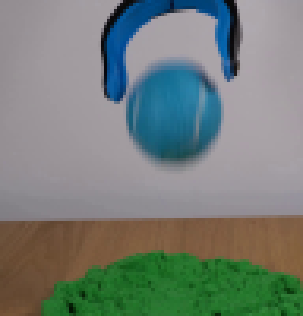
视觉工具实际返回图片 3
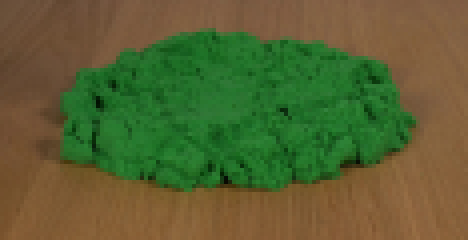
视觉工具实际返回图片 4
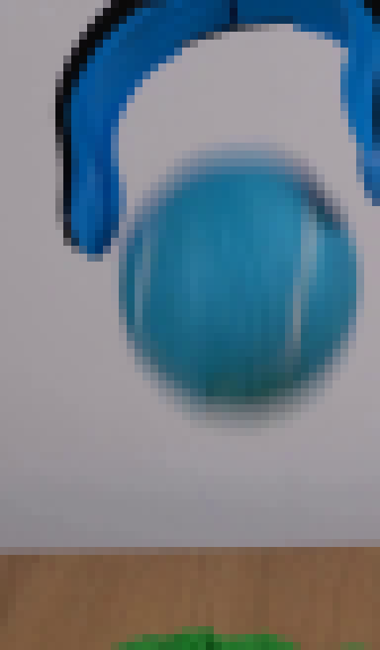
视觉工具实际返回图片 5
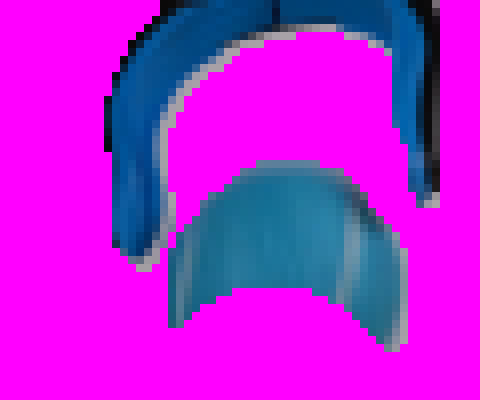
视觉工具实际返回图片 6
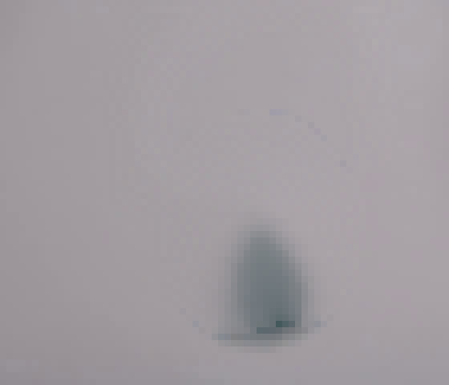
视觉工具实际返回图片 7
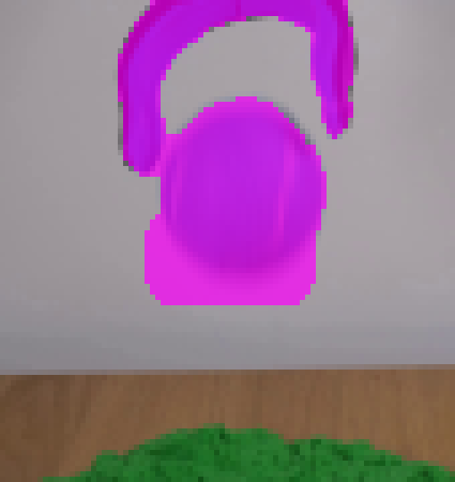
视觉工具实际返回图片 8
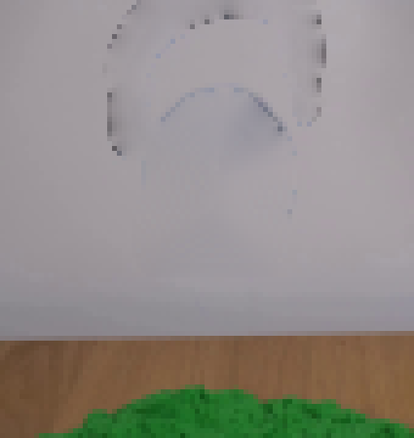
视觉工具实际返回图片 9
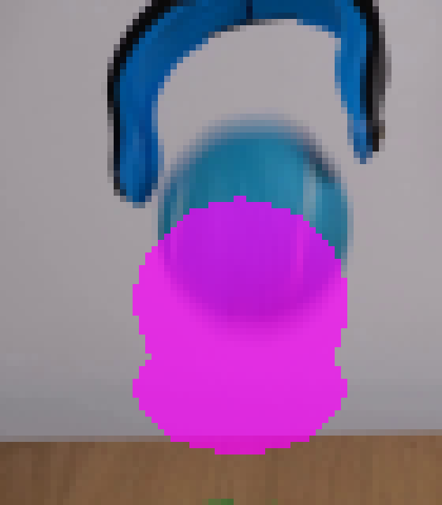
视觉工具实际返回图片 10
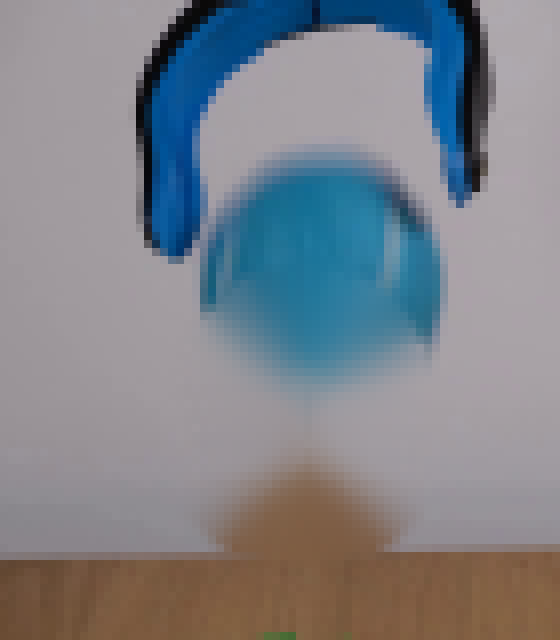
视觉工具实际返回图片 11
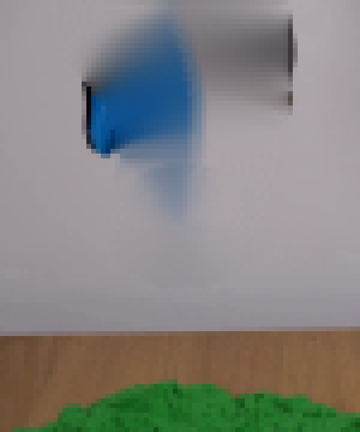
视觉工具实际返回图片 12
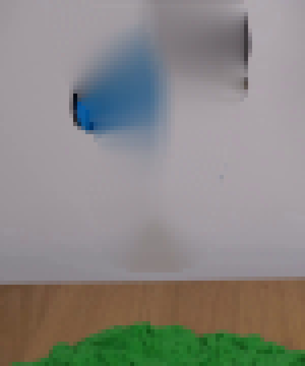
视觉工具实际返回图片 13
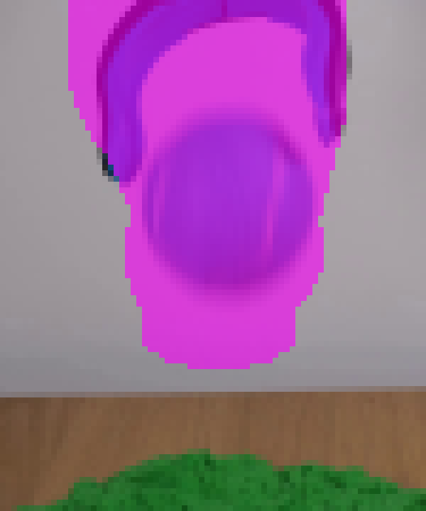
视觉工具实际返回图片 14
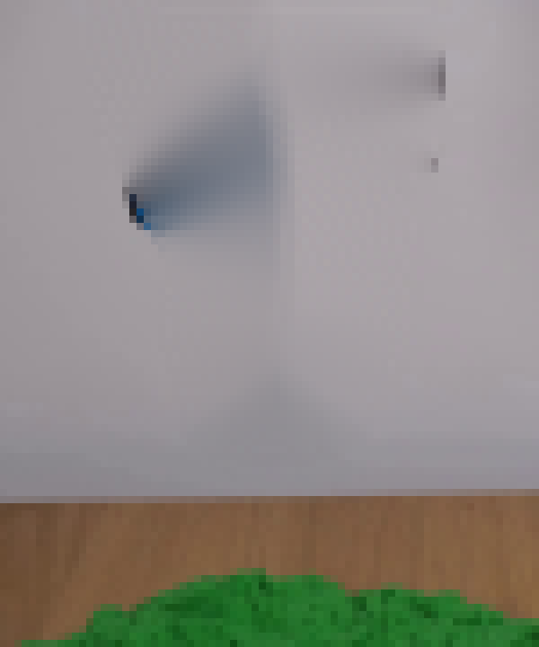
视觉工具实际返回图片 15
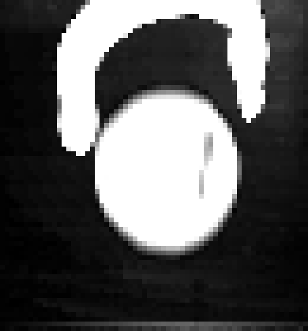
视觉工具实际返回图片 16
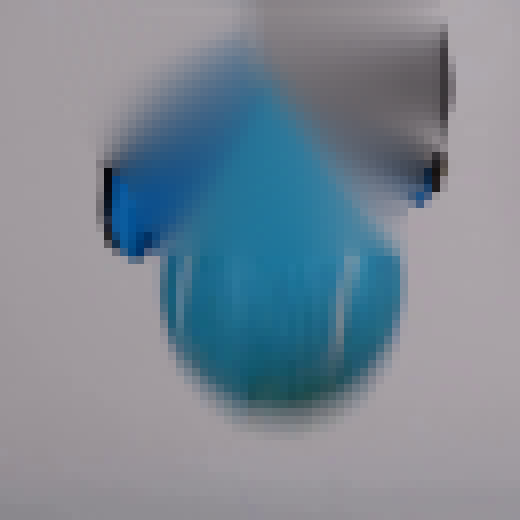
视觉工具实际返回图片 17
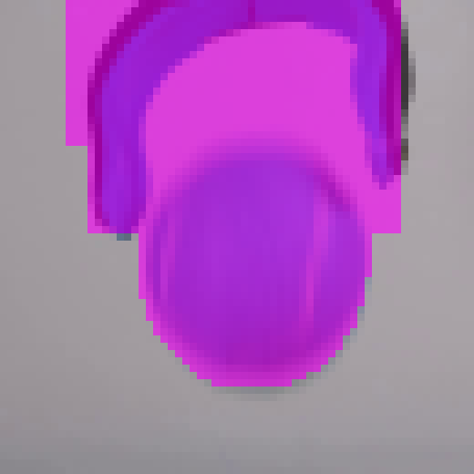
视觉工具实际返回图片 18
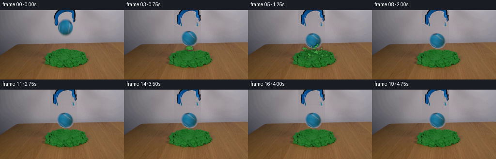
视觉工具实际返回图片 19
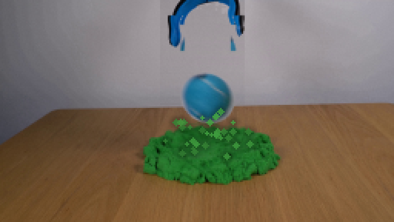
视觉工具实际返回图片 20
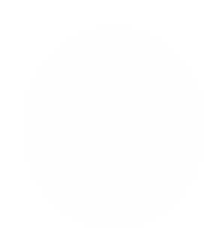
视觉工具实际返回图片 21
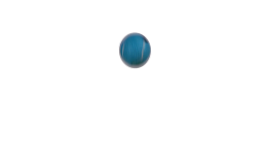
视觉工具实际返回图片 22
视觉工具实际返回图片 23
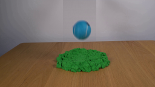
视觉工具实际返回图片 24
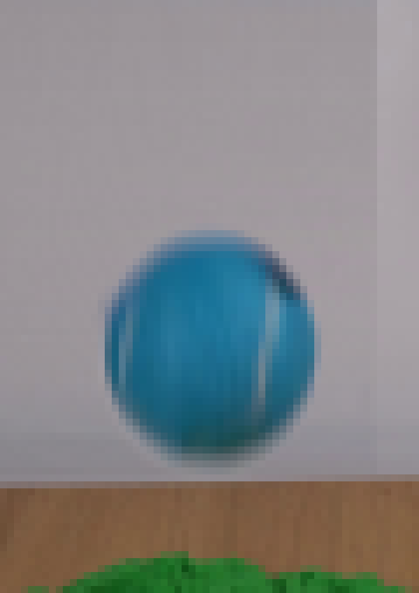
视觉工具实际返回图片 25
视觉工具实际返回图片 26
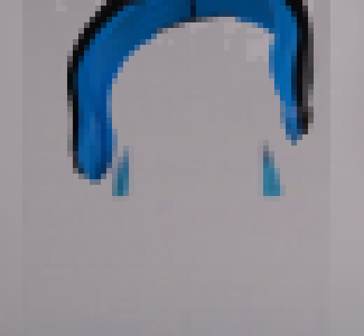
视觉工具实际返回图片 27
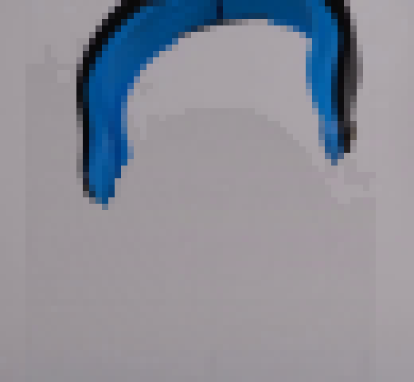
视觉工具实际返回图片 28
保存候选 1 份；完成命令 43 次；可验证图片返回 28 张。原始 API 响应与完整日志保留在本地。